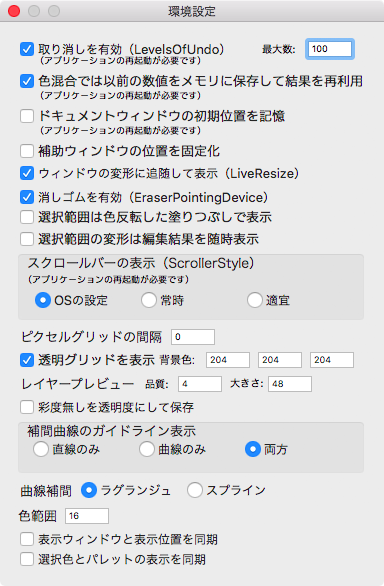

環境設定
本ツールを使用するに当たって、いくつか補助的な設定が行えます。
メニューのを選択して環境設定を行います。

設定内容は次のとおりです。
取り消しを有効
画像の編集に伴う「取り消し」を有効にします。
初期値は有効（チェック済み）です。
また、このチェックの隣にある最大数で、積み立て可能な取り消しの数を設定できます。
０で無限となり、初期値は１００です。
なお、この設定は本ツールの次回起動時から有効になります。
色混合では以前の数値をメモリに保存して結果を再利用
複数の色を混ぜ合わせた描画を行う際は、色要素の掛け合わせ（計算）を行います。
ただ、混合の都度、計算を繰り返すとその分だけ演算の時間がかかるため、色混合の条件と結果をメモリに溜めて、次からの計算ではその結果を利用する（計算させない）ようにして演算時間を短縮するようにしています。
ただし、メモリに溜めるとそれだけ消費メモリが増すため、空きメモリに余裕が少ない場合はこの機能を無効化してください。
初期値は有効（チェック済み）です。
なお、この設定は本ツールの次回起動時から有効になります。
ドキュメントウィンドウの初期位置を記憶
最初に開いたドキュメントウィンドウ（主ウィンドウ）の位置を記憶し、次回起動時に開く同ウィンドウの位置を再現します。
初期値は無効（チェック無し）です。
なお、この設定は本ツールの次回起動時から有効になります。
補助ウィンドウの位置を固定化
補助ウィンドウの位置を固定化（移動禁止）とします。移動が禁止されるだけで、ウィンドウの開閉やサイズ変更は可能です。
初期値は無効（チェック無し）です。
ウィンドウの変形に追随して表示
ウィンドウハンドルをつかんでリサイズする際に、変形しつつウィンドウ内の表示も更新するか更新しないかを決めます。
この機能は主ウィンドウのリサイズ時のみ反映します。
初期値は有効（チェック済み）です。
この機能は、もともと G3 な PPC Mac とかだと LiveResize が辛そうと感じたため設けました。
消しゴムを有効
ペンタブレットを使用している場合に、ペンタブレットの消しゴム判定を検知し機能を有効化します。
初期値は有効（チェック済み）です。
消しゴム検出は OS の判定に依存しています。
選択範囲は色反転した塗りつぶしで表示
範囲選択した場合に、その選択領域内を反転（２５６色での反転）して表示します
初期値は無効（チェック無し）です。
選択範囲の変形は編集結果を随時表示
選択領域の編集（移動・複写・リサイズ・回転）を行う場合の表示の設定です。
機能を無効とするか有効とするかの利点と欠点は次のとおりです。
- チェック無しの場合（無効化）
選択枠のみを変形します。操作が完了した時点で領域内の画像を加工し表示します。
変形中の処理はこちらの設定のほうが早いです。 - チェック済みの場合（有効化）
選択枠内の画像を逐次加工して表示します。枠のみの変形では無く直感的な結果が得られるのですが、その分、時間がかかります。
初期値は無効（チェック無し）です。
スクロールバーの表示
主ウィンドウ、表示ウィンドウのスクロールバーの表示について指定します。
スクロールバーの表示はにて設定しますが、本ツールではこの設定を（本ツールに対してのみ）上書きします。
- ＯＳの設定
システム環境設定での設定のままとします。 - 常時
システム環境設定の設定によらず、常に表示します（システム環境設定の「常に表示」相当です）。 - 適宜
システム環境設定の設定によらず、必要に応じて表示します（システム環境設定の「スクロール時に表示」相当です）。
初期値はＯＳの設定です。
なお、この設定は本ツールの次回起動時から有効になります。
この機能は、特定の条件が重なるとスクロールが極端に遅くなる（部分表示のはずが常に全画面再描画となる）ことがある現象を回避するためのものです。Yosemite で常時（常に表示）とすると発現することがあるようです。
ピクセルグリッドの間隔
ピクセルグリッドの表示方法について指定します。
- 数値が０
ピクセルグリッドを表示しません。 - 数値が１
ピクセルグリッドを表示する場合、常に実線を引きます。 - 数値が２以上
ピクセルグリッドを表示する場合、指定した間隔ごとに実線を引きます。
初期値は０（ピクセルグリッドを表示しない）です。
また、ピクセルグリッドは主ウィンドウで表示倍率が４倍以上の場合にのみ表示します。
透明グリッドを表示
すべてのレイヤーで透明なピクセルだった場合の表示方法について設定します。
チェック済みの場合、白と指定した色とでパターンを作ったグリッド表示となります。
チェック無しの場合、指定した色のみとなります。
色の指定はＲＧＢで行います。
初期値は透明グリッド表示（チェック済み）で、色は 204、204、204（#cccccc）です。
レイヤープレビュー
品質ではレイヤーウィンドウに表示するプレビュー画像の品質を設定します。
０以上の正の値が指定でき、初期値は４です。
１が最低品質で値を増やすと表示品質が向上します。ただし、品質を上げると（補間縮小の）演算時間が長くなるため、むやみに大きな数値を指定しないでください。
なお、値０は特別な指定となり、最高品質となります（編集中の画像全体を間引くことなくプレビューに用います。そのため、表示品質は高いのですがその分、動作が重くなります）。
また、大きさではレイヤーウィンドウに表示するプレビュー画像の大きさを設定します。
２４から２５５までの正の値が指定でき、初期値は４８です。
彩度無しを透明度にして保存
無彩色（彩度の無い色のことで、RGB の各値が同じになります）である色要素の保存方法を指定します。
チェック済みの場合、完全な黒（RGB が #000000）、完全な白（RGB が #ffffff）を除いた無彩色（彩度の無い色）の明るさを透明度に読み替えて（tRNS CHUNK にて）保存します。
チェック無しの場合、すべての色は PLTE CHUNK にて保存します（tRNS CHUNK には透明・不透明の情報のみを格納します）。
初期値は彩度無しは透明度にしない（チェック無し）です。
補間曲線のガイドライン表示
補間曲線のガイドラインの表示方法を設定します。
- 直線のみ
制御点の間を直線で結んだ表示をします（補間曲線は表示しません）。 - 曲線のみ
制御点の間を補間曲線で結んだ表示をします。 - 両方
直線、曲線の両方を表示します。
初期値は両方です。
補間曲線
補間曲線の演算方法を設定します。
- ラグランジュ
ラグランジュ補間の演算を行います。 - スプライン
スプライン曲線の演算を行います。
初期値はラグランジュです。
色範囲
（境界色を伴わない）塗り選択の色の範囲を指定します。
初期値は０です。
表示ウィンドウと表示位置を同期
主ウィンドウの表示位置と表示ウィンドウの表示位置を同期します。
初期値は同期しない（チェック無し）です。
選択色とパレットの表示を同期
パレットウィンドウの表示位置と選択色を同期します。
初期値は同期しない（チェック無し）です。